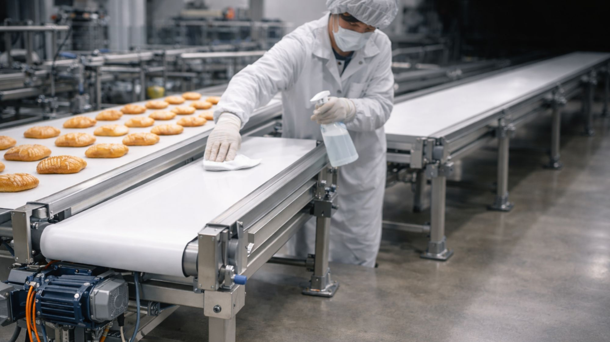
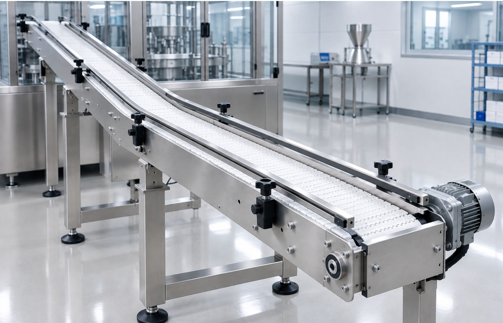

Sirio Nastri Trasportatori è specializzata nella produzione di nastri trasportatori industriali di alta qualità. Utilizziamo materiali resistenti e tecnologie avanzate per garantire prestazioni affidabili, sicurezza operativa e lunga durata nel tempo. Ogni prodotto è progettato per integrarsi perfettamente nei vostri impianti e migliorare l’efficienza dei processi produttivi.
Selezioniamo solo materiali certificati e ad alte prestazioni, adatti ai diversi settori industriali. Ogni nastro viene progettato per garantire resistenza, durata e sicurezza.
Versatile, economico e resistente all’usura. Ideale per logistica, packaging e movimentazione generale.
Materiale certificato per alimentare e farmaceutico. Superficie igienica, liscia e facile da sanificare.
Alta resistenza a taglio, abrasione e impatti. Perfetta per ambienti gravosi e industriali pesanti.
Resistente a temperature elevate. Ideale per forni, essiccatori e processi termici.
Robuste, durevoli e perfette per trasporto di materiali taglienti o caldi.
Soluzioni dedicate per la movimentazione di particolari ferrosi e trucioli.
Materiali progettati per lavorare da -20°C a +600°C, ideali per ambienti estremi.
Perfetti per oli, solventi, detergenti e sostanze aggressive.
Strutture rinforzate e materiali anti‑abrasione per cicli intensivi.

I nastri Sirio per l’industria alimentare sono realizzati con materiali idonei al contatto con alimenti, resistenti alla corrosione e facili da sanificare. Progettati per rispettare i più alti standard igienici, assicurano un trasporto sicuro e continuo in ambienti produttivi dove la pulizia è fondamentale.
I nostri nastri trasportatori sono progettati per operare in ambienti chimici complessi, dove sono richieste resistenza a temperature elevate e a sostanze aggressive. Grazie ai materiali selezionati e alle soluzioni tecniche avanzate, garantiamo affidabilità e durata anche nelle condizioni più estreme.

Grazie all’utilizzo di materiali certificati e a un design igienico, i nostri nastri trasportatori sono ideali per le esigenze dell’industria farmaceutica. Offrono sicurezza, durata e piena conformità alle normative di settore, garantendo un trasporto preciso e controllato in ambienti dove l’igiene è fondamentale.
I nastri Sirio per il settore automotive sono progettati per garantire continuità, precisione e resistenza in linee produttive ad alta velocità. Grazie a materiali tecnici e soluzioni su misura, assicurano un trasporto stabile di componenti meccanici, parti delicate e assemblaggi complessi.
I nostri nastri trasportatori si integrano perfettamente con sistemi robotici e linee automatizzate, garantendo movimenti fluidi, precisione millimetrica e compatibilità con sensori e attuatori intelligenti.
Realizziamo soluzioni personalizzate per ogni settore produttivo. Contattaci per un preventivo o per una consulenza tecnica.
Richiedi informazioniAnni di esperienza nella produzione di nastri trasportatori per i principali settori industriali.
Utilizziamo solo materiali selezionati per resistenza, igiene e durata.
Ogni nastro è progettato per integrarsi perfettamente nel vostro impianto.
Supporto costante, manutenzione programmata e interventi rapidi.
Controlliamo ogni fase del processo produttivo.
Nastri progettati per durare anche in ambienti gravosi.
Studiamo il vostro impianto e le necessità operative.
Misurazioni, valutazioni e definizione dei parametri tecnici.
Disegni tecnici e scelta dei materiali.
Realizzazione interna con materiali certificati.
Test di qualità e verifica delle prestazioni.
Montaggio in impianto e supporto post‑vendita.